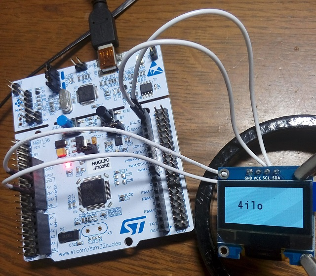

STM32 I2C接続OLEDディスプレイを使う
2019年04月23日 カテゴリー：STM32

秋月電子等で取り扱いがある、128×64ドットのI2C制御有機ELディスプレイモジュールを使ってみます。使われているSSD1306は定番の制御ICらしいです。接続は上写真の通り、GND、VCC(3.3V)、SCL、SDAをつなぎます。SCL、SDAのプルアップ抵抗はモジュールに搭載されているようです。
＜STM32CubeMX（5.1.0） Pinout & Configurationタブ＞
左側列のConnectivity→I2C1を開く
・中央列上側 Mode
I2C : I2C
・中央列下側 Configuration→Parameter Settingsタブ
Rise Time (ns) : 1000
Fall Time (ns) : 300
・右側列 IC画像
ピン位置を変更
(61)-PB8 : I2C1_SCL
(62)-PB9 : I2C1_SDA
＜TrueSTUDIO（9.3.0）＞
下記ページのライブラリを利用します。必要最小限となっているので使いやすいと思います。
github.com/4ilo/ssd1306-stm32HAL（右側の[Clone or download]ボタンから全ファイルをダウンロードできます。）
以下の4ファイルを自分のプロジェクトへコピーします。
Incフォルダ→fonts.h ssd1306.h
Srcフォルダ→fonts.c ssd1306.c
私のNucleoボードはSTM32F3シリーズなので、fonts.hとssd1306.h最上部に記載されている"stm32f4xx_hal.h"を"stm32f3xx_hal.h"へ変更します。STM32F4シリーズを使う場合は、そのままでOKです。
ライブラリのmain.cから以下の2箇所のコードを自分のmain.cへコピーします。
/* USER CODE BEGIN Includes */〜/* USER CODE END Includes */
/* USER CODE BEGIN 2 */〜/* USER CODE END 2 */
実行しディスプレイに文字が表示されれば成功です。以下は各関数の簡単な説明です。円などの図形を描く関数はないので、必要なものはssd1306_DrawPixel関数を使って描画することになります。
ssd1306_Init…初期化
ssd1306_Fill…画面全体塗りつぶし
ssd1306_DrawPixel…1ピクセル描画
ssd1306_SetCursor…文字描画位置を設定
ssd1306_WriteString…文字列を描画
ssd1306_UpdateScreen…描画を反映して画面を更新
＜画面端の文字を強制描画＞
ディスプレイ端のピクセル数が足りない場合、文字描画しないようになっていますが、文字が切れてでも描画するようにします。ssd1306_DrawPixel関数で画面外は描画しないよう制限されているので、たぶん問題ないでしょう。
ssd1306.c内、ssd1306_WriteChar関数の以下の記述を削除
// Check remaining space on current line
if (SSD1306_WIDTH <= (SSD1306.CurrentX + Font.FontWidth) ||
SSD1306_HEIGHT <= (SSD1306.CurrentY + Font.FontHeight))
{
// Not enough space on current line
return 0;
}
＜フォント自作＞
font.cにフォントのデータが入っており、自分で文字データを作成することができます。例として7x10ピクセルの「2」を0と1で描きます。横は左側7列だけ使いますが、後々のために16列準備します。
0011100000000000
0100010000000000
0100010000000000
0000010000000000
0000100000000000
0001000000000000
0010000000000000
0111110000000000
0000000000000000
0000000000000000
→0x3800, 0x4400, 0x4400, 0x0400, 0x0800, 0x1000, 0x2000, 0x7C00, 0x0000, 0x0000
これを「2」のフォントデータとすればOKです。自動計算できる表計算ファイル（LibreOfficeやOpenOfficeで開けるodsファイル）をGitHubに置いています。